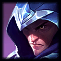
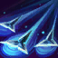
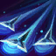
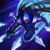
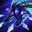

Talon's spells Wound champions and epic monsters, stacking up to 3 times. When Talon attacks a champion with 3 stacks of Wound, they bleed for heavy damage over time.

Talon
the Blade's Shadow
Noxus
Health:
583 (+90 per level)
Attack damage:
60 (+3.1 per level)
Attack speed:
0.625 (+2.9% per level)
Movement speed:
335
Health Regen:
8.51 (+0.75 per level)
Armor:
26.88 (+3.5 per level)
Magic Resist:
32.1 (+1.25 per level)
''The three deadliest blademasters in all of Valoran are bound to the house of Du Couteau: my father, myself, and Talon. Challenge us, if you dare.''
-- Katarina Du Couteau
Talon's earliest memories are the darkness of Noxus' underground passages and the reassuring steel of a blade. He remembers no family, warmth, or kindness. Instead, the clink of stolen gold and the security of a wall at his back are all the kinship he has ever craved.
Abilities

 

 

Skins
Abilities
Blade's End
Noxian Diplomacy
Cost:
30 Mana
Range:
10000
Talon stabs the target unit. If they are within melee range, this attack deals critical damage. If they are outside melee range, Talon will leap at his target before stabbing them. Talon refunds some health and cooldown if this ability kills the target.
Talon leaps to target and deals 80/100/120/140/160 (+110% bonus Attack Damage) physical damage. If cast from melee range, Talon does not leap but instead critically strikes, dealing [0]% damage (0).When Noxian Diplomacy kills a unit, Talon regains 0 health and refunds 50% of its cooldown.
Rake
Cost:
55/60/65/70/75 Mana
Range:
650
Talon sends out a volley of daggers that then return back to him, dealing physical damage every time it passes through an enemy. The returning blades deal bonus damage and slow units hit.
Talon tosses a volley of blades, dealing 50/65/80/95/110 (+0) physical damage to units hit and returning to him after a delay.On their way back to Talon, the blades deal 60/85/110/135/160 (+60% bonus Attack Damage) additional damage and slow the enemy by 40/45/50/55/60% for 1 second.
Assassin's Path
Cost:
No Cost
Range:
725
Talon vaults over any terrain or structure, up to a max distance. This ability has a low cooldown, but puts the used terrain on a long cooldown.
Talon vaults up to 0 units over the nearest structure or terrain in the target direction. The vault's speed is affected by Talon's movement speed.Talon cannot dash over the same section of terrain more than once every 0 seconds.
Shadow Assault
Cost:
100 Mana
Range:
550
Talon disperses a ring of blades and becomes Invisible while gaining additional Movement Speed. When Talon emerges from Invisibility, the blades converge on his location. Each time the blades move, Shadow Assault deals physical damage to enemies hit by at least one blade.
Talon disperses a ring of blades that deal 90/135/180 (+80% bonus Attack Damage) physical damage to all units they hit, gains 40/55/70% increased movement speed, and becomes Invisible for up to 2.5 seconds. When the Invisibility ends, the blades converge, dealing the same damage again to enemies they pass through.If Talon cancels Invisibility with an attack or Noxian Diplomacy, the blades converge on his target's location instead. Stealth - Invisible: Talon can only be revealed by nearby enemy Turrets.
''The three deadliest blademasters in all of Valoran are bound to the house of Du Couteau: my father, myself, and Talon. Challenge us, if you dare.''
-- Katarina Du Couteau
Talon's earliest memories are the darkness of Noxus' underground passages and the reassuring steel of a blade. He remembers no family, warmth, or kindness. Instead, the clink of stolen gold and the security of a wall at his back are all the kinship he has ever craved. Kept alive only by his quick wits and deft thievery, Talon scraped out a living in the seedy underbelly of Noxus. His mastery of the blade quickly marked him as a threat, and Noxian guilds sent assassins to him with a demand: join their ranks or be killed. He left the bodies of his pursuers dumped in Noxus' moat as his response.
The assassination attempts grew increasingly frequent until one assailant met Talon blade-for-blade in a match of strength. To his surprise, Talon was disarmed and facing down his executioner's sword when the assassin revealed himself to be General Du Couteau. The General offered Talon the choice between death at his hand, or life as an agent of the Noxian High Command. Talon chose life, on the condition that his service was to Du Couteau alone, for the only type of orders he could respect were from one he could not defeat.
Talon remained in the shadows, carrying out secret missions on Du Couteau's orders that took him from the frigid lands of the Freljord to the inner sanctums of Demacia itself. When the general vanished, Talon considered claiming his freedom, but he had gained immense respect for Du Couteau after years in his service. He became obsessed with tracking down the general's whereabouts, and scours the land in search of those responsible for Du Couteau's disappearance.
-- Katarina Du Couteau
Talon's earliest memories are the darkness of Noxus' underground passages and the reassuring steel of a blade. He remembers no family, warmth, or kindness. Instead, the clink of stolen gold and the security of a wall at his back are all the kinship he has ever craved. Kept alive only by his quick wits and deft thievery, Talon scraped out a living in the seedy underbelly of Noxus. His mastery of the blade quickly marked him as a threat, and Noxian guilds sent assassins to him with a demand: join their ranks or be killed. He left the bodies of his pursuers dumped in Noxus' moat as his response.
The assassination attempts grew increasingly frequent until one assailant met Talon blade-for-blade in a match of strength. To his surprise, Talon was disarmed and facing down his executioner's sword when the assassin revealed himself to be General Du Couteau. The General offered Talon the choice between death at his hand, or life as an agent of the Noxian High Command. Talon chose life, on the condition that his service was to Du Couteau alone, for the only type of orders he could respect were from one he could not defeat.
Talon remained in the shadows, carrying out secret missions on Du Couteau's orders that took him from the frigid lands of the Freljord to the inner sanctums of Demacia itself. When the general vanished, Talon considered claiming his freedom, but he had gained immense respect for Du Couteau after years in his service. He became obsessed with tracking down the general's whereabouts, and scours the land in search of those responsible for Du Couteau's disappearance.
Friends
-
 Katarina
Katarina
Rivals
-
 Quinn
Quinn